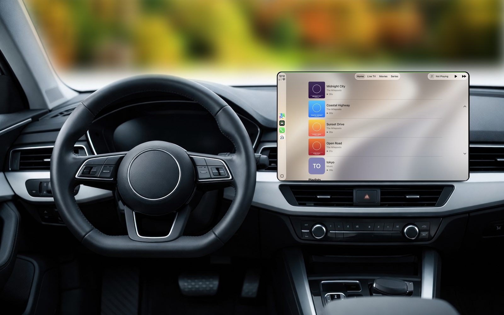

Comment utiliser Car.TV
Chaque fonction pas à pas, et comment l’utiliser en voiture.
Sommaire
- Voir la visite
- Se connecter à CarPlay
- Premiers pas
- TV en direct
- Guide TV
- Bibliothèque
- Mes vidéos
- Musique
- Playlists
- Une playlist
- Le lecteur
- Mode voiture
- Enregistrés
- Navigateur
- Transfert Wi-Fi
- Réglages
- Questions
Voir la visite
Se connecter à CarPlay
- Vérifiez votre voitureCar.TV affiche la vidéo sur l’écran de la voiture uniquement dans les voitures qui prennent en charge la vidéo dans CarPlay, avec iOS 26.4 ou ultérieur. Les autres voitures lisent le son. Réglages › Vérif. voiture vous indique ce que votre voiture peut faire.

- Avec ou sans filConnectez votre iPhone au port USB CarPlay de la voiture avec un câble, ou utilisez CarPlay sans fil si votre voiture le propose.

- Activez CarPlay sur l’iPhoneRéglages › Général › CarPlay › choisissez votre voiture. Activez « Autoriser CarPlay en mode verrouillé ».

- Trouvez Car.TV sur l’écran de la voitureTouchez Car.TV sur l’écran d’accueil de CarPlay. Absent ? Sur l’iPhone : Réglages › Général › CarPlay › votre voiture › Personnaliser › Apps.

- Choisissez quoi regarderTV en direct, Mes vidéos, Musique et Playlists sont sur l’écran de la voiture, comme sur votre téléphone.

- La vidéo à l’arrêtQuand la voiture roule, CarPlay arrête l’image et Car.TV garde le son ; le téléphone affiche « Écran de la voiture · son uniquement ».

- Boutons du volantPendant la TV en direct, suivant et précédent changent de chaîne. Désactivez cette option dans Réglages › Lecture.
- Passagers : Mode voitureSur le téléphone, le Mode voiture affiche de grandes vignettes et de grands boutons. Conducteurs, gardez les yeux sur la route.

Premiers pas
- Bienvenue dans Car.TVVotre TV en direct, vos films, vidéos et musique, sur l’iPhone, sur une TV et sur l’écran de la voiture à l’arrêt. Voici une visite d’une minute.
- Ajoutez tout iciUne playlist IPTV (M3U), un portail Xtream, un serveur Jellyfin, Emby ou Plex, un dossier cloud, ou des vidéos de Fichiers et Photos.
- Recherchez partoutChaînes, films, séries, vos propres vidéos et morceaux.
- RéglagesVos sources, Premium, la langue, le Mode voiture, le contrôle parental, et ce guide.
- AccueilReprenez là où vous en étiez : Reprendre la lecture, En cours et Nouveautés dans votre bibliothèque.
- TV en directToutes les chaînes, par pays ou avec des filtres. Appuyez longuement sur une chaîne pour son guide et les Favoris.
- BibliothèqueVos contenus d’abord : Mes vidéos, Musique et Playlists se lisent hors ligne. Films et Séries viennent de vos sources.
- EnregistrésVos favoris et téléchargements, pour quand il n’y a pas de réseau.
- Pas encore de playlist ?Essayez les chaînes d’exemple et ouvrez des films pour voir comment tout fonctionne.
- Le lecteurS’ouvre en plein écran. Balayez-le vers le bas : la lecture continue dans une petite barre pendant que vous naviguez.
- Importez vos fichiersEnvoyez des vidéos et de la musique depuis un ordinateur avec Transfert Wi-Fi, ou enregistrez-les depuis le web avec le Navigateur.
- Vous utilisez Car.TV en voiture ?Découvrez pas à pas comment connecter CarPlay. Vous pouvez revoir cette visite à tout moment dans Réglages › Comment utiliser Car.TV.
TV en direct

- Trouver une chaîneRecherchez n’importe quelle chaîne par son nom.
- Deux dispositions, pays, filtresCouloir ou Lignes ; chaînes par pays ; filtres par langue, catégorie et qualité.
- Appui long sur une chaîneSon guide, les Favoris et Corriger le guide quand le programme manque.
Guide TV
- Balayez dans le tempsTouchez une émission en cours pour la regarder.
- RattrapageLes émissions passées des chaînes avec archive proposent Voir depuis le début.
Bibliothèque
- Vos propres fichiersMes vidéos, Musique et Playlists. Lecture hors ligne, en route et en voiture.
- De vos sourcesFilms et séries de vos playlists et serveurs. Filtrez par source ou catégorie, et triez-les.
- Rechercher dans cette étagèreNe cherche que dans l’étagère affichée.
- La Bibliothèque se souvientElle s’ouvre sur la dernière étagère utilisée.
Mes vidéos
- Appui long sur une vidéoLire ensuite, Ajouter à une playlist, Renommer, Choisir une image, Déplacer vers un dossier, Partager ou Supprimer.
- Sélection multipleDéplacez, mettez en file d’attente ou supprimez plusieurs vidéos à la fois.
- Tri et affichagePar date, nom, taille, durée ou dernière lecture, en grille ou en liste. Le stockage est ici aussi.
- Ajouter des vidéosDepuis Fichiers ou Photos, depuis un ordinateur avec Transfert Wi-Fi, ou depuis le web.
Musique
- Morceaux, Albums, ArtistesParcourez votre musique comme vous le souhaitez.
- Balayez un morceauVers la droite pour l’ajouter à une playlist. Vers la gauche pour modifier ses infos ou le supprimer. Appui long pour Lire ensuite.
- Minuteur de veilleLa musique s’arrête d’elle-même après la durée choisie.
Playlists
- Nouvelle playlistMélangez vidéos et morceaux dans l’ordre de votre choix, pour la banquette arrière ou la route.
- ImporterImportez une playlist .m3u depuis une autre app.
- Playlists intelligentesToujours à jour : ajouts récents, non vues, vidéos courtes et plus.
Une playlist

- Votre couvertureChoisissez une couverture dans Photos ou une image d’une vidéo : ⋯ › Couverture.
- Lire ou aléatoireToute la playlist, hors ligne si tout est sur cet appareil.
- Répéter, vitesse, diaporamaChaque playlist garde sa propre répétition et sa propre vitesse. Ajoutez des photos : elles s’affichent en plein écran pendant les morceaux.
- PlusAjoutez des vidéos ou des morceaux, modifiez les infos, épinglez, dupliquez, exportez en M3U. Faites glisser pour réordonner ; balayez vers la gauche pour retirer.
Le lecteur

- Touchez l’imageAffiche ou masque les commandes.
- Sauter 15 secondesReculez ou avancez de 15 secondes ; le bouton du milieu met en pause.
- Image, son et plusAdapter, Remplir ou Zoom ; piste audio ; sous-titres ; vitesse ; synchro A/V.
- Lire sur une TVAirPlay, Google Cast ou une TV connectée DLNA sur votre Wi-Fi.
- Mode voitureDe grands boutons pour les passagers.
- La lecture continueFermez ou balayez vers le bas : la lecture continue dans la petite barre.
Mode voiture

- Pour les passagersDe grandes vignettes et de grands boutons. Conducteurs, gardez les yeux sur la route.
- Quitter le Mode voitureRetour à l’app complète.
Enregistrés
- Favoris et téléchargementsAppuyez longuement sur une chaîne ou ouvrez un film et touchez Ajouter aux Enregistrés. Les téléchargements se lisent sans réseau.
Navigateur
- Rechercher ou saisir une adresseLa page d’accueil garde vos favoris et les sites que vous consultez souvent.
- OngletsPlusieurs pages à la fois, et des onglets privés qui ne gardent aucun historique.
- Enregistrer depuis la pageEnregistrez la musique et les vidéos que vous avez le droit de conserver. Les morceaux vont dans Musique, les vidéos dans Mes vidéos.
Transfert Wi-Fi
- Démarrez le serveurOuvrez ensuite l’adresse affichée sur un ordinateur du même Wi-Fi et déposez vos fichiers.
- Gardez cet écran ouvertLes transferts s’arrêtent quand vous quittez cet écran. Les morceaux vont dans Musique, les vidéos dans Mes vidéos.
Réglages
- Vos sourcesAjoutez, modifiez, actualisez ou désactivez des playlists et des serveurs.
- Ce guideRevoyez la visite, connectez CarPlay et lisez le guide dans votre langue.
Questions
Pourquoi l’écran de la voiture ne diffuse-t-il que le son quand je roule ?
C’est ainsi que fonctionne la vidéo dans CarPlay, par sécurité : l’image ne s’affiche que lorsque la voiture est garée. Quand la voiture roule, CarPlay arrête l’image et le son continue. Aucune app ne peut changer cela.
Car.TV n’apparaît pas sur l’écran de ma voiture. Pourquoi ?
Car.TV n’apparaît que dans les voitures qui prennent en charge la vidéo dans CarPlay, avec iOS 26.4 ou ultérieur. Vérifiez Réglages › Général › CarPlay › votre voiture › Personnaliser › Apps, et consultez Vérif. voiture dans les Réglages de Car.TV.
Car.TV inclut-il des chaînes ?
Non. Car.TV lit ce que vous ajoutez : une playlist ou un portail IPTV auquel vous avez accès, votre serveur multimédia, ou vos propres vidéos et musique. Essayez la playlist d’exemple pour voir comment ça marche.
Qu’est-ce qui se lit sans internet ?
Tout ce qui est dans Mes vidéos et Musique, vos téléchargements et les playlists qui en sont composées. Une playlist vous indique quand un élément a besoin d’internet.
Comment ajouter mes vidéos et ma musique dans Car.TV ?
Depuis Fichiers ou Photos avec le bouton +, depuis un ordinateur avec Transfert Wi-Fi, par AirDrop ou le bouton Partager, ou depuis le web avec le Navigateur.
Comment créer une playlist avec un diaporama photo ?
Bibliothèque › Playlists › Nouvelle, ajoutez des morceaux, puis Ajouter un diaporama et choisissez des photos. Lancez la playlist : les photos remplissent l’écran pendant les morceaux.
Mes playlists apparaissent-elles sur mes autres appareils ?
Oui, avec Premium et Synchro iCloud activée dans les Réglages. Les vidéos et les morceaux restent sur l’appareil où ils ont été ajoutés : une playlist sur un autre appareil affiche ce que cet appareil contient.
Car.TV collecte-t-il mes données ?
Non. Il n’y a ni compte, ni publicité, ni suivi. Vos sources, playlists et photos restent sur vos appareils et, si vous l’activez, dans votre propre iCloud.
D’autres questions ? Consultez la FAQ →
Ne regardez jamais de vidéo en conduisant. CarPlay n’affiche la vidéo que lorsque la voiture est garée ; en roulant, le conducteur doit seulement écouter.